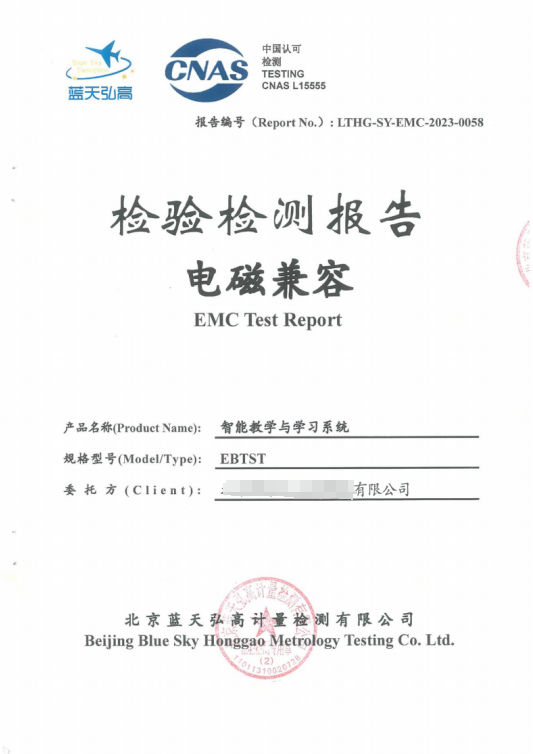
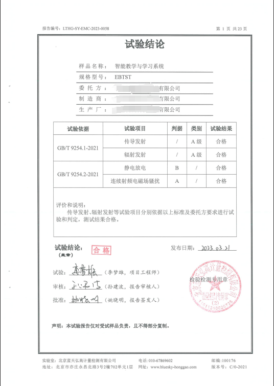

安全认证
第三方 EMC 检测核心信息公开展示
AI脑波英语所使用的智能教学与学习系统已完成第三方 EMC 检测，核心项结论合格。安全信息公开透明，帮助用户更安心地了解训练环境。

EMC 检测报告封面报告编号：LTHG-SY-EMC-2023-0058

试验结论页智能教学与学习系统 EBTST，核心试验项目结论合格。
核心信息
检测摘要
产品名称智能教学与学习系统
规格型号EBTST
报告编号LTHG-SY-EMC-2023-0058
第三方机构北京蓝天弘高计量检测有限公司
试验结论合格
安全说明
采用特定频率声波，不是电磁辐射
AI脑波英语的学习过程以学习舱环境、耳机输入、特定频率声波和 AI 训练系统为核心。设备检测结果公开展示，帮助用户更直观地了解安全边界与使用环境。
非侵入式 不涉及植入式设备，更贴近日常使用体验。
第三方检测 通过独立机构完成 EMC 检测，核心结论可查可看。
使用环境 学习舱强调舒适、安静与低干扰，帮助保持稳定训练状态。
预约体验
想进一步了解使用方式与训练环境
可扫码咨询课程体系、学习安排、训练环境与体验流程。